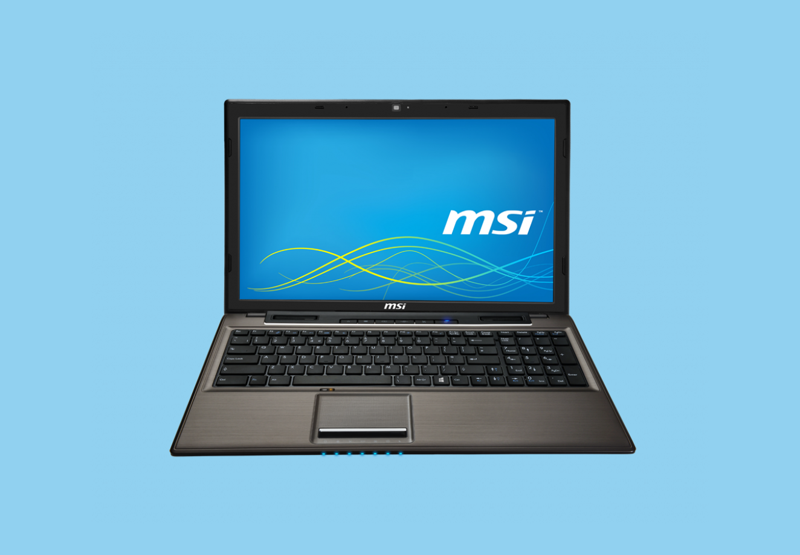

Introducción
Consultaremos las opciones de seguridad que nos ofrece nuestra BIOS.
En mi caso aunque es algo antigua se trata de una BIOS UEFI y no Legacy.
En el apartado "Security", tenemos las siguiente opciones.

SECCIÓN CLAVES EN LA BIOS
- Supervisor Password → Nos permite asignar una clave a la ahora de acceder a la BIOS.
- User Password → En este caso asignamos una clave, que nos pedirá justo cuando arranquemos el equipo, para seguir iniciando el sistema.

- Password check → Es una opción en la cual podemos indicar cuando queremos que se revise la clave o al arranque o siempre. La diferencia que he podido comprobar es:
- Setup: Te pedirá la clave al entrar a la BIOS.
- Always: Te la pedirá al arrancar o al entrar en la BIOS. Sin necesidad de poner una específica a la ahora de arrancar.


Nos pedirá confirmación de la clave que hemos puesto.

Guardamos cambios y reiniciamos.
Y ya al reiniciar nuestro equipo. Y para ejecutar la BIOS, nos pedirá la clave que acabamos de asignar.
Ahora, haremos lo mismo pero con User Password.
Nos volverá a pedir que confirmemos la clave que queremos.

Guardaremos cambios, y al reiniciar está vez nos pedirán una clave justo al arrancar el equipo.
SECCIÓN SECURE BOOT
- Secure Boot: Es el arranque seguro que metió Microsoft, para de alguna manera impedir que se ejecute posible "código malicioso" y asegurar que lo que se ejecuta es de "autores conocidos". Esto acarreó problemas a la hora de instalar Windows con otros sistemas.
A día de hoy ya es más "amigable", con otros sistemas.
Por ejemplo Ubuntu de Linux.
- Tenemos la opción:
- Secure Boot Control: Habilitado/Deshabilitado.

- Secure Boot Mode: Standar/Custom

- Secure Boot Control: Habilitado/Deshabilitado.
Luego a su vez tiene 2 opciones más:
- Factory Default Key Provisioning: Enabled/Disabled. Habilitaremos o no. Las claves, que permiten el proceso de autenticar previamente los módulos que se vayan a poder ejecutarse (firmware drivers, UEFI bootloaders, UEFI applications).
- Install All Factory Default Keys: Para instalar las claves por defecto.

SECCIÓN BOOT
- Boot Order (Orden de arranque):
- Aquí podremos personalizar el orden en el que queremos que se arranque nuestro equipo. Tenemos a modo de compatibilidades dos tipos de modos de selección en el orden de arranque:
- UEFI o Legacy: En mi caso tengo puesto el modo "UEFI". Y el orden se muestra en la imagen.